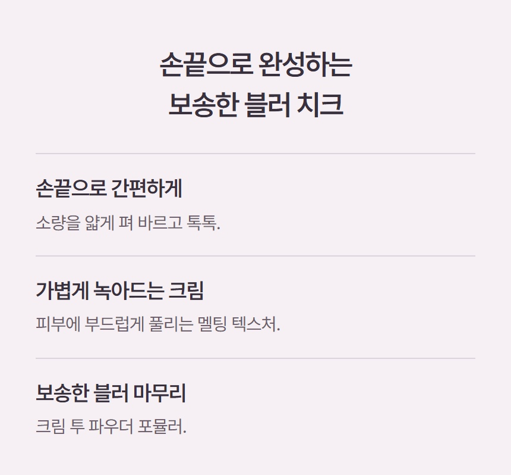
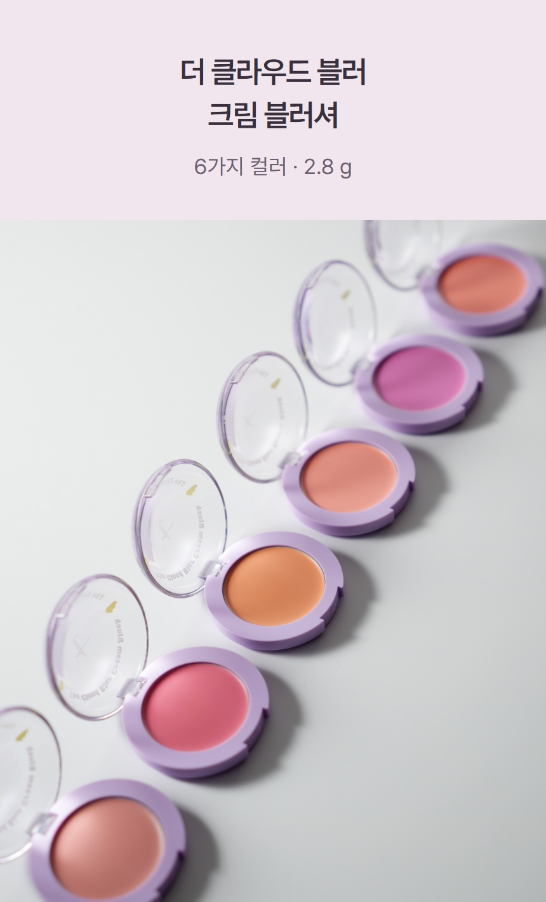
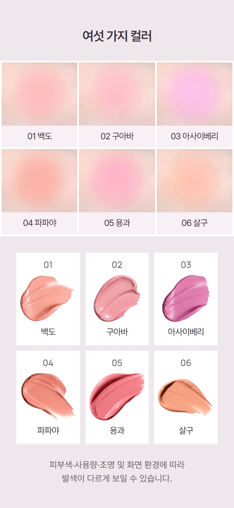

색을 고르기 전에,
이 치크를 고를 이유부터.
기존 상세는 제품 소개에서 바로 색상 비교로 넘어갔습니다. 제품 사진 다음에 ‘사용의 간편함 → 가벼운 크림 사용감 → 보송한 블러 표현’을 설명하는 한 구간을 추가했습니다.
추가한 구간

레퍼런스에서 가져온 구조
| 참고 | 확인한 구성 | 탐뷰티 적용 |
|---|
| 리리뮤 VEIL GLOW CHEEK | 컬러 소개 전에 POINT01·02·03으로 장점을 구분. | 세 가지 장점의 위치와 간결한 행 구조. 타사의 광채·펄 주장은 적용하지 않음. |
| e.l.f. Putty Blush | 크림투파우더를 사용감·블렌딩과 연결해 설명. | 제형 이름에서 끝내지 않고 손끝 사용·가벼움·보송한 표현으로 풀어 설명. |
우리 문안의 근거
| 새 소제목 | 확인한 탐뷰티 자료 |
|---|
| 손끝으로 간편하게 | 공식 사용법의 손가락 또는 도구, 얇게 펴 바르기와 두드리기. |
| 가볍게 녹아드는 크림 | 기존 브랜드 상세의 가볍고 폭신한 멜팅 텍스처 표현. |
| 보송한 블러 마무리 | 사용자가 확인한 크림투파우더 특성과 브랜드의 Soft-Focus Blur 메이크업 표현. |
페이지 안에서의 위치
이전 · 제품 소개 → 색상 비교


수정 · 제품 소개 → 구매 이유 → 색상 비교


기존 17개 이미지·GIF와 상품정보는 동일한 파일 내용으로 유지했고, 새 구간 JPG 한 장만 추가했습니다. 기존 실제 도포 영상은 편집본이며 피부결 개선의 전후 시험이 아닙니다. 구매 이유를 명시하는 디자인 수정으로, 구매 전환 상승이 검증된 결과는 아닙니다. Cafe24 실제 업로드는 보류 상태입니다.